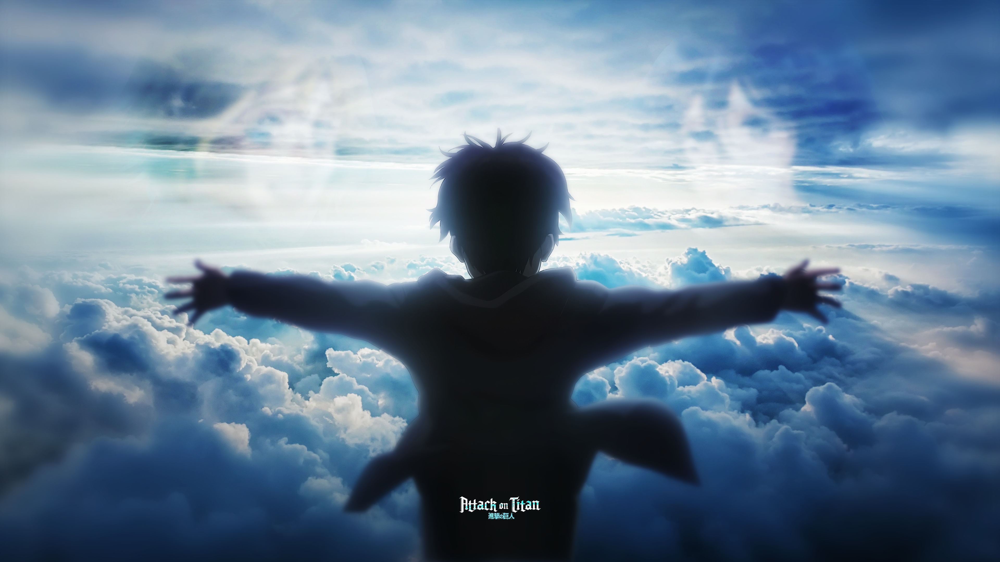

ENTERTAINMENT NEWS
| attack on titans anime ends
'Attack on Titan' Series Finale Ending Explained: The Cycle of Violence Continues
4| Nov | 2023
Hajime Isayama’s masterpiece has finally come to a momentous end. After ten groundbreaking years, loyal fans of Attack on Titan say their goodbyes to the beloved characters of Paradis Island and the world beyond the wall. What is said to be one of the greatest stories ever told was conceived when the author manifested the concept of the Titans during a drunk encounter with a customer at a coffee shop where he worked. All those years ago, Isayama came to believe the human race is the most dangerous creature on Earth, and the anime's last episode gives us a tragic wake-up call to the destiny of our reality today.
Released on Nov. 5th, the dark fantasy has brought millions together to watch the highly anticipated finale of season 4, "The Final Chapters: Special 2", where Eren Yeager's (Yuki Kaji) inevitable plan of genocide and the fate of humanity are determined by the hands of the Global Alliance — Eren’s former allies and the rag-tag group of Marleyans. The previous episode left viewers with the start of the Rumbling going on to kill the rest of humankind outside Paradis. Hange sacrifices her life, Eren reveals his final titan form, and the team races in a cargo plane to find Eren's body and deliver the fatal blow. The final chapter brings audiences right back into the turbulent action, exploding the screen with its closing, heartbreaking scenes that will forever leave us breathless.

In an interview with The New York Times, Hajime Isayama shares his humble thoughts on the unavoidable finale of Attack on Titan: "I guess there could have been an ending where it was a happy ending and the war ended and everything was fine and dandy. I guess that could have been possible. At the same time, the end of fighting and the end of contention itself kind of seems hokey. It kind of seems like it’s not even believable. It’s just not plausible in the world we’re living in right now. And so, sadly, I had to give up on that kind of happy ending".